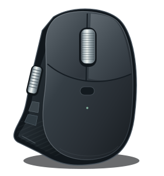
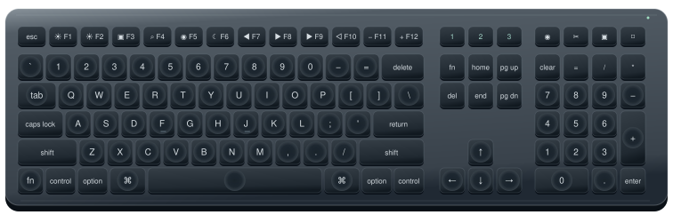

YOUR DEVICES
Connecting

—Battery
Unavailable
DPI
MagSpeed wheelUnavailable

MAKE IT YOURS
Keys & shortcuts
Saved key mappings live in OpenLogi.
AUTOMATIONSConnection & batteryEvents are off
iBacklight and Fn lock stay in OpenLogi.
EASY-SWITCHPublish channel choicesOpenLogi update needed